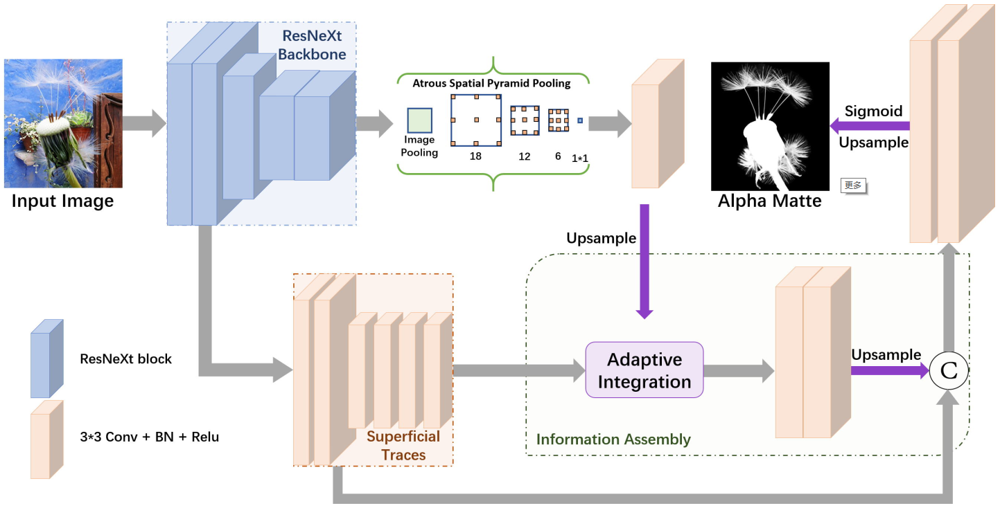
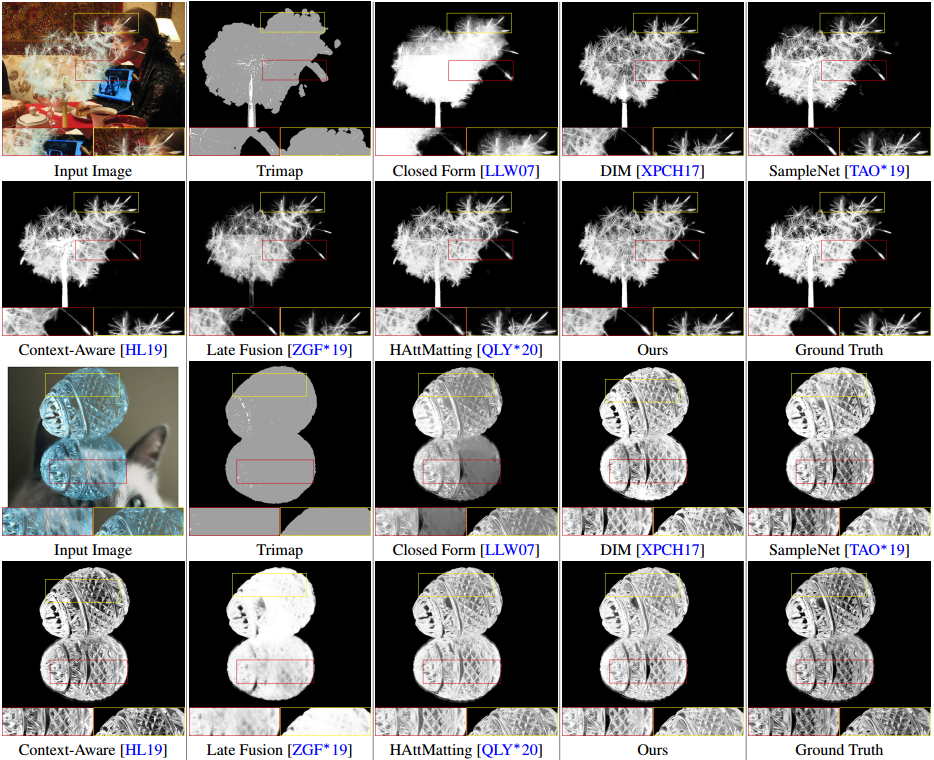
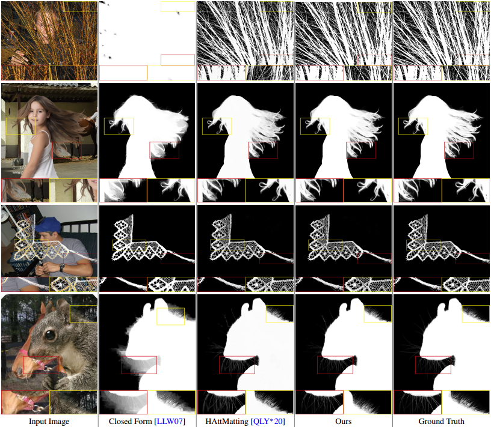

In this paper, we propose a multi-scale information assembly framework (MSIA-matte) to
pull out high-quality alpha mattes from single RGB images. Some visual results are shown above. Our method can capture continous opacity variation in an end-to-end fasion.
In this paper, we propose a multi-scale information assembly framework (MSIA-matte) to
pull out high-quality alpha mattes from single RGB images. Some visual results are shown above. Our method can capture continous opacity variation in an end-to-end fasion.
Abstract
Image matting is a long-standing problem in computer graphics and vision, which mostly identified as the accurate estimation of the foreground in input images. We argue that the foreground objects can be represented by different-levels information, the main body, large-grained boundaries, refined details, etc. Based on this observation, in this paper, we propose a multi-scale information assembly framework (MSIA-matte) to pull out high-quality alpha mattes from single RGB images. Technically speaking, given an input image, we extract advanced semantics as our subject content, and retain initial CNNs features to encode different-levels foreground expressions, then combine them by our well-designed information assembly strategy. Extensive experiments have proven the effectiveness of the proposed MSIA-matte, and we can achieve state-of-the-art performance compared to existing matting networks.
Method
The motivation of our model is to capture multi-scale foreground information to represent manifold opacity, then integrate them to predict a relatively complete foreground. We employ ResNeXt as our backbone to extract advanced semantics, which can represent the subject content of the foreground. Synchronously, we preserve initial features to infer different-levels superficial traces, which contain foreground details and textures with distinguished opacity. In the information assembly decoder stage, we employ adaptive strategy to assemble multi-scale foreground expressions to predict an alpha matte.
Comparisons on Public Datasets
The visual comparisons on the Adobe Composition-1k.
The visual comparisons on the Distinctions-646.
BibTex
@article{Qiao2020MSIA,
author = {Qiao, Yu and Liu, Yuhao and Zhu, Qiang and Yang, Xin and Wang, Yuxin and Zhang, Qiang and Wei, Xiaopeng},
title = {Multi-scale Information Assembly for Image Matting},
journal = {CGF},
volume = {39},
number = {7},
pages = {565-574},
year = {2020},
}